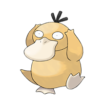

| N.º | Nombre | Imagen | Tipo | Altura (m) |
Peso (kg) |
Estadisticas de Combate |
Habilidades | Debilidades | Descripción | ||
|---|---|---|---|---|---|---|---|---|---|---|---|
| Tipo 1 | Tipo 2 | Ataque | Defensa | ||||||||
| 0004 | Charmander |  |
- Fuego | 0.6 | 8.5 | 52 | 43 |
|
|
La llama de su cola indica su fuerza vital. Si está débil, la llama arderá más tenue. | |
| 0054 | Psyduck |  | - Agua | 0.8 | 19.6 | 52 | 50 |
|
|
Padece continuamente dolores de cabeza. Cuando son muy fuertes, empieza a usar misteriosos poderes. | |
| 0078 | Rapidash |  |
- Fuego | 1.7 | 95.0 | 86 | 70 |
|
|
Su crin de fuego centellea cuando galopa como una flecha a velocidades que llegan a alcanzar los 240 km/h. | |
| 0093 | Gengar |  |
- Fantasma | - Veneno | 1.5 | 40.5 | 65 | 60 |
|
|
Para quitarle la vida a su presa, se desliza en su sombra y espera su oportunidad en silencio. |
| 0104 | Cubone |  |
- Tierra | 0.4 | 6.5 | 50 | 95 |
|
|
Cuando llora al acordarse de su madre fallecida, su llanto resuena en el cráneo que lleva en la cabeza. | |
| 0105 | Hitmonlee |  |
- Lucha | 1.5 | 49.8 | 120 | 53 |
|
|
Endurece los músculos de las plantas de los pies en el momento en el que impactan contra su rival para potenciar al máximo sus patadas. | |
| 0130 | Gyarados |  |
- Agua | - Volador | 6.5 | 235.0 | 125 | 79 |
|
|
Cuando reina el conflicto en el mundo, aparece de la nada y reduce a cenizas todo lo que se cruza en su camino. |
| 0148 | Dragonite |  |
- Dragón | - Volador | 2.2 | 210,0 | 134 | 95 |
|
|
Dicen que viven en una isla en algún lugar del océano que solo ellos habitan. |
| 0151 | Chikorita |  |
- Planta | 0.9 | 6.4 | 49 | 65 |
|
|
Le encanta tomar el sol. Usa la hoja que tiene en la cabeza para localizar sitios cálidos. | |
| 0255 | Torchic |  |
- Fuego | 0.4 | 2.5 | 60 | 50 |
|
|
Posee una saca de fuego en el abdomen, cuya llama arderá durante toda su vida. El calor que desprende resulta muy agradable al abrazarlo. | |